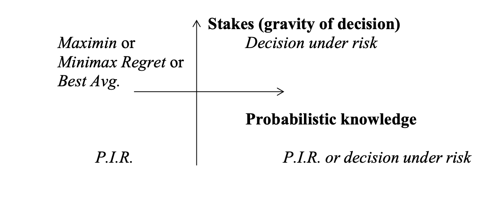

Decision rules when the agent is ignorant of all probabilities
Rules
Dominance
- Weak Dominance: act is as good or better than for each possible state and there is at least one state where it is strictly better
- Strong Dominance: act is strictly better than for all possible states
Principle: 1. Avoid dominated acts and prefer dominant acts 2. Can only use dominance principle if states are independent of acts 3. Gold standard, use this whenever possible
Maximin/Leximin
- Find the minimum value of each act
- Choose the act with the least bad worst-case outcome
Note: can violate dominance if there are rows with the same minimum
- Leximin can help resolves ties by removing the minimum value in case of ties. Note that this violates dominance!
- Leximin* only strikes out a single minimum value in case of ties. This does *not* violate dominance
This rule is extremely conservative, avoids the worst-case scenario
Optimism/Pessimism and “Best Average”
- Maximax (pick the best of the best-case outcomes)
- Best Average: take the best of each row and worst of each row and average it, pick the act with best average
- Optimism/Pessimism: Uses a weighted average (a linear combination) of the minimum and maximum values ( is pessimistic, is optimistic):
Objections:
- Requires interval scale instead of ordinal scale
Minimax regret
Basis: it is irrational to reject an act with a chance of a great gain, where the cost is slight.
- Regret value for each outcome = value of the outcome - maximum value in that column
- Max regret for each act is the most negative regret for each row A
- Choose the act with the minimum max regret
Objections
- Requires interval scale instead of ordinal scale
- Adding irrelevant alternative acts potentially affects recommended acts
Principle of Insufficient Reason (PIR)
If there are n possible states and you have no reason to believe any of them more likely than any other, then it is rational to assign each state equal probability (namely, )
- Assign each of the states probability and maximize the expected value
- For an act , calculate
This turns the problem into a DUR
Objections
- Requires interval scale instead of ordinal scale
- Arbitrary partitions of states (can result in incoherence)
- Doesn’t apply outside games of chance (e.g. Pascal’s Wager)
Rationality Constraints
Find criteria that any rational decision rule should satisfy. Use these to rule out one or more decision principles
Milnor proposes a few axioms for rules under DUI:
- Mixture condition (randomization)
- If a rational agent is indifferent between A1 and A2, then the agent must be indifferent between A1, A2 and the mixed strategy
- Presupposition that the agent has a neutral attitude to risk
- Eliminates Maximin (as above)
- Eliminates Minimax Regret (as above)
- Eliminates Optimism-pessimism rule with
- Eliminates Best Avg if we allow other mixtures
- Only PIR survives
- If a rational agent is indifferent between A1 and A2, then the agent must be indifferent between A1, A2 and the mixed strategy
- Independence of Irrelevant Alternatives
- A rational agent’s choice will be invariant under an irrelevant expansion B: if before adding option B, then after adding B.
- Eliminates Minimax Regret
Perhaps we should use different rules for DUI in different situations. Can we be systematic?

For decisions under partial ignorance, see: Precautionary Principle